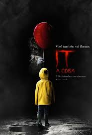
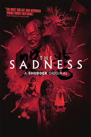
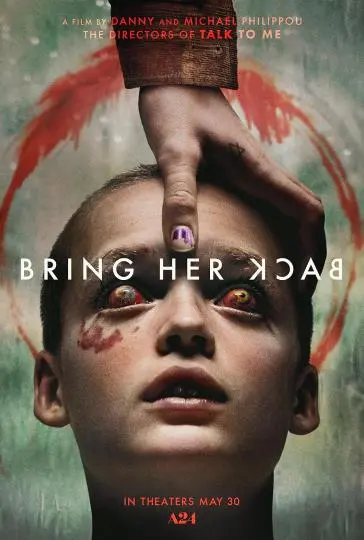

IT: A Coisa

Um grupo de crianças se une para investigar o misterioso desaparecimento de vários jovens em sua cidade. Eles descobrem que o culpado é Pennywise, um palhaço cruel que se alimenta de seus medos e cuja violência teve origem há vários séculos.
The Sadness

Um jovem casal tenta se reencontrar no meio de uma cidade devastada por uma praga que transforma suas vítimas em sádicos insanos e sanguinários.
Faça Ela Voltar

Um irmão e uma irmã testemunham um ritual aterrorizante na casa isolada de sua nova mãe adotiva.